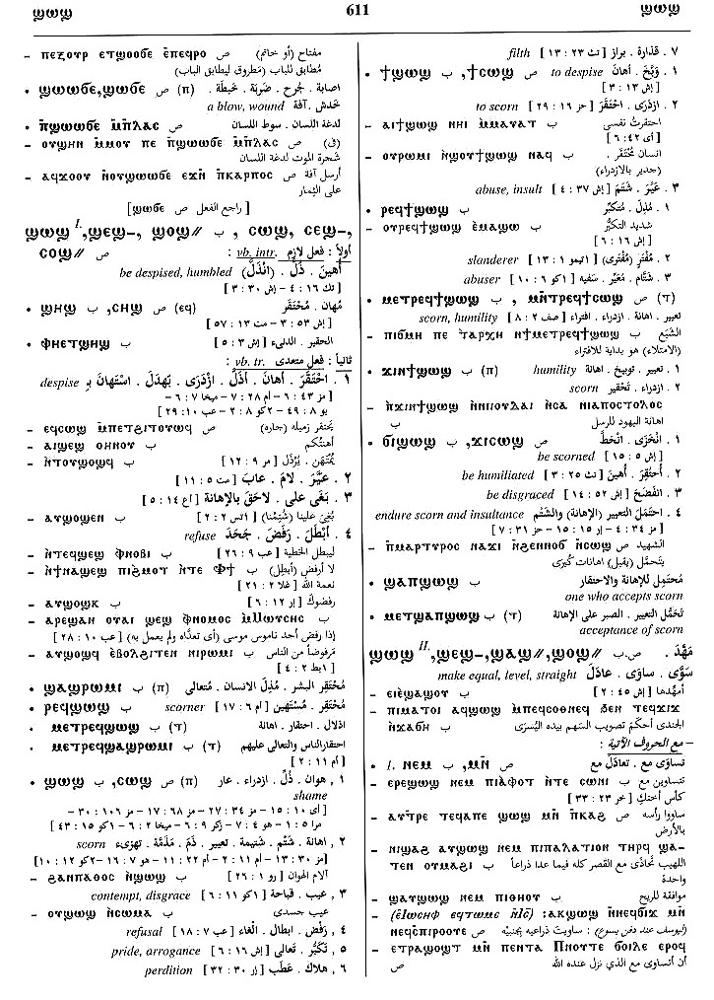

(verb)
intr: be despised, humbled [ατιμαζεσθαι, εξουδενουν,
υβριζειν]
tr: despise
tr: despise
(S)
ⲥⲱϣ
(S, A, sA) ϣⲱⲥ
(B, F) ϣⲱϣ
(S) ⲥⲉϣ-, ϣⲉⲥ-
(sA) ϣⲱⲥ-
(B) ϣⲉϣ-, ϣⲁϣ-
(S) ⲥⲟϣ=, ϣⲟⲥ=
(Sf) ⲥⲁϣ=
(A) ϣⲁⲥ=
(B) ϣⲟϣ=
(F) ϣⲁϣ=
(S) ⲥⲏϣ+
(S, A) ϣⲏⲥ+
(B, F) ϣⲏϣ+
(B) p c ϣⲁϣ-
(S, A, sA) ϣⲱⲥ
(B, F) ϣⲱϣ
(S) ⲥⲉϣ-, ϣⲉⲥ-
(sA) ϣⲱⲥ-
(B) ϣⲉϣ-, ϣⲁϣ-
(S) ⲥⲟϣ=, ϣⲟⲥ=
(Sf) ⲥⲁϣ=
(A) ϣⲁⲥ=
(B) ϣⲟϣ=
(F) ϣⲁϣ=
(S) ⲥⲏϣ+
(S, A) ϣⲏⲥ+
(B, F) ϣⲏϣ+
(B) p c ϣⲁϣ-
| intr :6396 | Crum: 375b | ||||||||
| (S) ⲉ- {comparat} (c) | 6397 | ||||||||
| (S, A, B, F) ― (ⲡ) | (noun male)
shame, contempt, scorn [ατιμια, υβρισ]2064 |
||||||||
| (S, A, B) ⲣⲉϥⲥ., ⲣⲉϥϣ. | scorner [υβριστησ]2065 | ||||||||
| (S) ⲙⲛⲧⲣ. | scorn2066 | ||||||||
| (S, B, F) ϯ ⲥ., ϯ ϣ. | despise, scorn [ατιμαζειν]2067 | Crum: 376a | |||||||
| (B) ⲣⲉϥϯ ϣ. | scorner [υβριστησ, λοιδοροσ]2068 | ||||||||
| (B) ϫⲓⲛϯ ϣ. | 2069 | ||||||||
| (B) ϣⲁⲡϣ. | 2070 | ||||||||
| (S, A, B) ϫⲓ ⲥ., ϭⲓ ϣ. | be scorned [ατιμαζεσθαι]2071 | ||||||||
| (S)
ⲥⲱϣϥ
(A) ⳉⲱⲥϥ, ⳉⲱϣϥ (B) ϣⲱϣϥ (S) ⲥⲉϣϥ- (B) ϣⲉϣϥ- (S) ⲥⲟϣϥ= (B) ϣⲟϣϥ= (S) ⲥⲟϣϥ+ (A) ⳉⲁⲥϥ+ (B) ϣⲟϣϥ+ (Sf, F) ⲥⲁϣϥ+ |
(verb)
intr: meaning as ⲥⲱϣ with which varies [εξουδενουσθαι, ατιμαζεσθαι, αδοξειν] tr:2072 |
||||||||
| (S, A, sA, B) ― (ⲡ) | (noun male)
[εξουδενημα]2073 |
||||||||
Homonyms:
| view | (S, sA, B, F) ϣⲱϣ (S) ⲥⲱϣⲉ (Sf) ϣⲟⲩϣⲟⲩ (A) ⳉⲱⳉ (S, B) ϣⲉϣ- (Sf) ϣⲁϣ- (S, B) ϣⲁϣ=, ϣⲟϣ= (A) ⳉⲁⳉ= (F) ϣⲉϣ= (S, sA, B, F) ϣⲏϣ+ (S) ⲥⲏϣ+ (A) ⳉⲏⳉ+ | (verb) tr: make equal,
level, straight [ομαλιζειν]
qual: B (rare) [ομαλιζειν]243 |
| view | (S, B, F) ϣⲱϣ (A) ⳉⲱⳉ (S) ϣⲟⲩϣⲟⲩ (S, B, F) ϣⲉϣ- (B) ϣⲁϣ- (S, B) ϣⲁϣ=, ϣⲟϣ= (S, sA, B, F) ϣⲏϣ+ | (verb) intr: scatter, spread
esp of odour & by wind [λικμαν,
πνειν]
tr: [λικμαν, καπνιζειν, λεαινειν]242 |
| view | (S) ⲥⲱϣ (B) (ϣⲱϣ), ϣⲁϣ (S) ⲥⲉϣ-, ϣⲉⲥ-, ⲥⲟϣ= | (verb) intr: B, tr: S, strike [τραχηλοκοπτειν]1523 |
| view | (S, B) ϣⲱϣ, ϣⲉϣ- (S) ϣⲱϣ- (S, B) ϣⲏϣ+ | (verb) intr: twist rope &c [κλωθειν]244 |
| view | (S, B) ϣⲟϣ (Sf) ϣⲁϣ (B) ϣⲱϣ, ϣⲟϣⲟⲩ (S) plural: ϣⲟⲟϣ(?) | (noun male/female) kind of antelope, hartebeest (bubalis busephalus) [βουβαλοσ]2016 |
Crum: 375,376

375

376
Dawoud: 611a-611b,
614a-614b

611

614